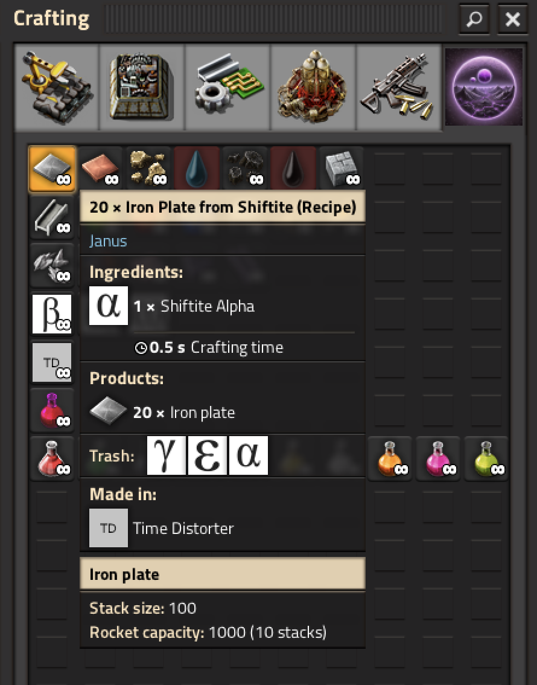

This series of blog posts is about a mod I'm creating for the video game Factorio and its expansion Space Age. If you don't know what Factorio is see https://factorio.com/.
Most of these recipes have to be done in Janus's special building: the Time Distorter. In order to unlock this building, you have to visit Janus and mine some Shiftite. The planet will also be littered with rocks that contain stone, iron ore, and copper ore so you aren't completely stranded if you forgot to bring resources (similar to Vulcanus).
In terms of rewards for making the science pack, currently the rewards are:
Implementing these ideas has been a fun and interesting process. Factorio mods are written in Lua. Currently all this mod is doing is adding what are known as "prototypes" to the game. Prototypes are templates for nearly everything in the game. So alot of my coding time has been referencing the Factorio Lua API and looking at examples. For example, this is the prototype for the recipe that converts Shiftite alpha into iron:
{
type="recipe",
name="janus-shiftite-to-iron",
category="janus-shiftite",
subgroup="janus-basic-from-shiftite",
ingredients={{type="item", name="janus-shiftite-alpha", amount=1}},
results={{type="item", name="iron-plate", amount=20}},
order="a",
enabled=false
}
After writing this code, it appears in game (featuring placeholder graphics):

Some things are still in progress with implementation, notably crafting times will still need balancing, which I haven't yet decided upon because I want to fully balance the Time Distorter before that.
It wouldn't make sense to decide the crafting time if I don't know the crafting speed of the Time Distorter, or what modules I want it to take, etc.
Currently at time of writing (12-8-2024), this mod is not on the mod portal. I don't intend on releasing until most of the game elements are in place. The main thing I'd like to improve on before releasing is map generation (currently its just Shiftite, no decorations or rocks) and graphics, as most graphics are placeholder.